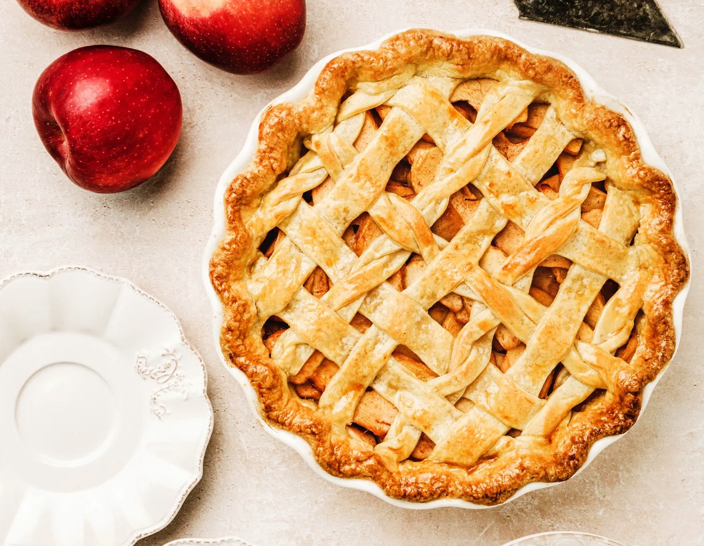

Apple pie

Make the best apple pie
Comment faire l'Apple Pie, un dessert traditionnelle Américain de tourte aux pommes caramélisées. Cette recette est très gourmande et pleine de saveur, avec des pommes fondantes parfumées à la cannelle sur une pâte à pie croustillante.
Ingredients
Dough
- 375 g farine
- 250 g beurre doux
- 40 g Sucre en poudre
- 2 pincée sel
- 90 ml eau
Filling
- 6 Pommes
- 3 c. à soupe de Sucre en poudre
- ½ jus de citron
- 1 c. à café cannelle en poudre
- 2 c. à café extrait de vanille
Instructions
Filling
- Épluchez les pommes et coupez-les en morceaux.
- Placez tous les ingrédients dans une casserole de taille moyenne, les pommes en morceaux, le jus de citron, le sucre en poudre, la cannelle et la vanille.
- Chauffez la casserole sur un feu moyen pendant environ 10 minutes, mélangez de temps en temps jusqu'à ce que les pommes soit bien ramollies mais encore un peu ferme.
- Laissez refroidir totalement la garniture aux pommes.
Dough
- Placez dans votre robot mixeur les ingrédients secs, la farine, le sucre en poudre et le sel et mixer pendant 30 secondes.
- Ajoutez le beurre très froid coupés en morceaux dans le mixeur et mélanger à vitesse maximal pendant 1 minute. Jusqu'à obtenir un mélange sableux.
- Ajoutez l'eau et mélanger à nouveau à vitesse rapide pendant une minute supplémentaire jusqu'à obtenir un pâte pas très homogène avec encore quelques morceaux de beurre visibles.
Make the pie
- Placez la pâte sur un plan de travail fariné et l'étaler en 2 disques assez grand pour recouvrir votre plat à tarte. Recouvrir l'intérieur de votre plat à tarte avec le disque de pâte, il doit retomber sur les bords.
- Garnir l'intérieur du plat avec la préparation aux pommes refroidit.
- Cuire la tourte pendant 1 heure (180°C) jusqu'à ce quelle soit bien dorée sur le dessus.